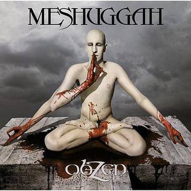
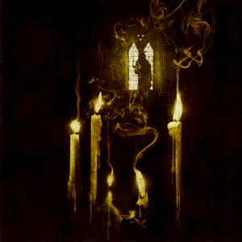

| Band Name |
Album Title: |
Genre/Year |
Album Art |
Description |
| Protest The Hero |
Fortress |
Progressive Metal - 2008 |
 |
Top-notch riffs, |
| Meshuggah |
Obzen |
Extreme Metal/Djent - 2008 |
 |
beeeeeeep bop ba bado bo |
| Opeth |
Ghost Reveries |
Progressive Death Metal - 2005 |
 |
beeeeeeep bop ba bado bo |
| Vektor |
Terminal Redux |
Thrash/Death Metal 2016 |
 |
beeeeeeep bop ba bado bo |
| The Dillinger Escape Plan |
One Of Us Is The Killer |
Progressive Metal - 2013 |
 |
beeeeeeep bop ba bado bo |
| Thantifaxath |
Sacred White Noise |
Black Metal - 2014 |
|
beeeeeeep bop ba bado bo |
| TesseracT |
One |
Progressive Metal/Djent - 2011 |
|
beeeeeeep bop ba bado bo |
| The Black Dahlia Murder |
Everblack |
Melodeath - 2013 |
|
beeeeeeep bop ba bado bo |
| Between The Buried And Me |
The Great Misdirect |
Progressive Death Metal - 2009 |
|
beeeeeeep bop ba bado bo |
| Mastodon |
Blood Mountain |
Progressive Metal - 2006 |
 |
beeeeeeep bop ba bado bo |
|
|
|
|
|